Uso de padrões ordinais na caracterização e análise de ataques de botnets em Internet das Coisas (IoT)
Eduarda Chagas, João Borgues e
Heitor Ramos
PPGCC - DCC
Doutoranda em Ciência da Computação pela Universidade Federal de Minas Gerais
Mestre em Ciência da Computação pela Universidade Federal de Minas Gerais
Graduada em Ciência de Computação pela Universidade Federal de Alagoas
Tópicos de interesse: Análise de dados temporais, Padrões ordinais e Deep Learning
A apresentação se encontra disponível no seguinte link:
Objetivo 1:
Apresentar conceitos e técnicas para detecção de ataques em sistemas IoT
Objetivo 2:
Apresentar o pacote NATS como a ferramenta de análise
Cenários em que a conectividade de rede e a capacidade de computação se estendem a objetos normalmente não considerados computadores, permitindo que esses dispositivos gerem, troquem e consumam dados com o mínimo de intervenção humana.
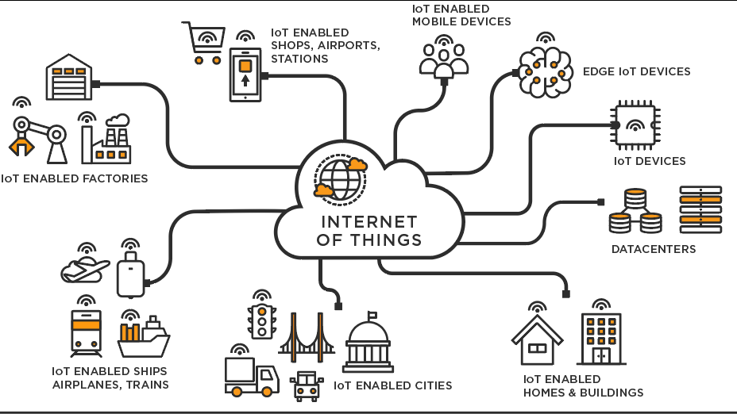
Exemplos de aplicações:
Manutenção preditiva do comportamento de máquinas industriais
Detecção de congestionamento de tráfego e incidentes a partir da análise de rastreamento por GPS
Detecção em tempo real de consumo de energia
Detecção de anomalia comportamental baseada em sensores vestíveis inteligentes
Séries temporais são conjunto de dados obtidos a partir de um processo observacional ao longo de um determinado período de tempo, não necessariamente dividido em espaços iguais, caracterizados pela dependência serial existente entre as observações.
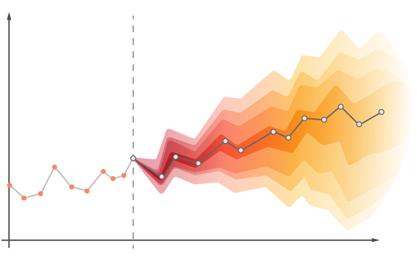
Um bot consiste de um software malicioso que pode ser usado para controlar remotamente dispositivos IoT através de um invasor, o botmaster.
A infecção por bots possui como principal ameaça à segurança a possibilidade de ataques orquestrados em grande escala, ex:
Entrega de spam
Ataques distribuídos de negação de serviço (DDoS)
Número de dispositivos IoT atacados compensa a falta de recursos computacionais dessas máquinas.
Uma vez que um dispositivo é infectado pelo malware Mirai, um dos botnets mais proeminentes para ataques DDoS, ele executa automaticamente algumas etapas operacionais que alteram seu tráfego de rede.
Algumas etapas operacionais executadas após um dispositivo ser infectado pelo malware Mirai:
Escanear a rede em busca de novas vítimas
Enviar relatórios
Receber comandos de um servidor de comando e controle (C&C)
Enviar tráfego de ataque para um servidor de destino
Essa alterações de padrões no tráfego de rede podem ser interpretadas como um comportamento anômalo e ser usada para detectar um dispositivo comprometido.
Ao longo deste tutorial gostaremos de responder as seguintes perguntas:
Como mudanças comportamentais produzidas por ataques de botnets afetam a dinâmica temporal dos dispositivos?
Como utilizar comportamentos de dinâmicas temporais para detectar anomalias que representam um ataque?
N-BaIoT consiste em um dataset com dados de tráfego de rede coletado de nove dispositivos IoT durante operações regulares (benigno) e sob ataques de botnet (anomalias).
O tráfego de rede anômalo foi gerado infectando cada dispositivo com as famílias de botnet Mirai e Bashlite.
Framework Kitsune - Modelo de rede usado para capturar o tráfego de pacotes de um determinado dispositivo IoT suspeito.
Todo o tráfego de um determinado dispositivo flui através de um roteador local
Um agente dentro desse roteador capturará e analisará passivamente os pacotes recebidos para calcular as medidas de tráfego da rede
Nossa estratégia precisa apenas de dados de uma única medida de tráfego de rede, o número de pacotes de um dispositivo, agregados em uma janela de tempo de \(100\) ms.
Foram coletados dados de nove dispositivos IoT: um termostato, uma babá eletrônica, uma webcam, duas campainhas e quatro câmeras de segurança.
Para o botnet Mirai, os ataques foram:
Inundação de ACK
Varrer a rede para novas vítimas
Inundação de SYN
Inundação de UDP
UDPPLAIN, que é outra inundação de UDP, mas com menos opções
Para o botnet Bashlite, os ataques foram:
Varrer a rede em busca de novos dispositivos vulneráveis
JUNK, que consiste no envio de dados de spam
COMBO de envio de dados de spam e conexão a um endereço IP e porta específicos
benign_traffic gafgyt_combo_attack gafgyt_junk_attack gafgyt_scan_attack
1 27.41037 162.1959 181.5811 37.25349
2 28.39889 161.7297 182.5748 38.25325
3 29.38796 162.2932 183.5716 39.25164
4 30.37565 160.5145 183.9486 40.25069
5 31.36300 161.5128 184.0499 41.25026
6 32.32814 162.5084 185.0423 42.24784
mirai_ack_attack mirai_scan_attack mirai_syn_attack mirai_udp_attack
1 164.4928 124.8352 190.6741 99.82794
2 163.6831 125.8348 191.6727 100.11303
3 164.6813 126.6326 191.8944 100.29988
4 164.7152 127.6326 189.0156 100.14628
5 165.7140 128.4386 190.0144 99.98136
6 155.7297 129.4381 190.5297 96.94243
mirai_udpplain_attack index
1 72.93275 1
2 73.90443 2
3 72.71706 3
4 72.35869 4
5 72.96676 5
6 72.88044 6Principais requisitos esperados em abordagens de análise de dados temporais:
Bandt-Pompe consiste de uma nova representação de séries temporais por padrões ordinais.
Seja \({\mathcal X} \equiv \{x_t\}_{t=1}^{T}\) uma série temporal de comprimento \(T\). Para capturar tais informações de ordem, os seguintes passos devem ser realizados:
\[\mathbf X^{(D,\tau)}_t =( x_t,x_{t+\tau},\dots,x_{t+(D-1)\tau}),\]
para \(t = 1,2,\dots,N\), onde \(N = T-(D-1) \tau\).
Mapeamento de permutação por índices cronológicos: ocorre pelos índices temporais ordenados de acordo com suas amplitudes.
Abaixo podemos ver o conjunto completo de padrões formado para \(D = 3\):
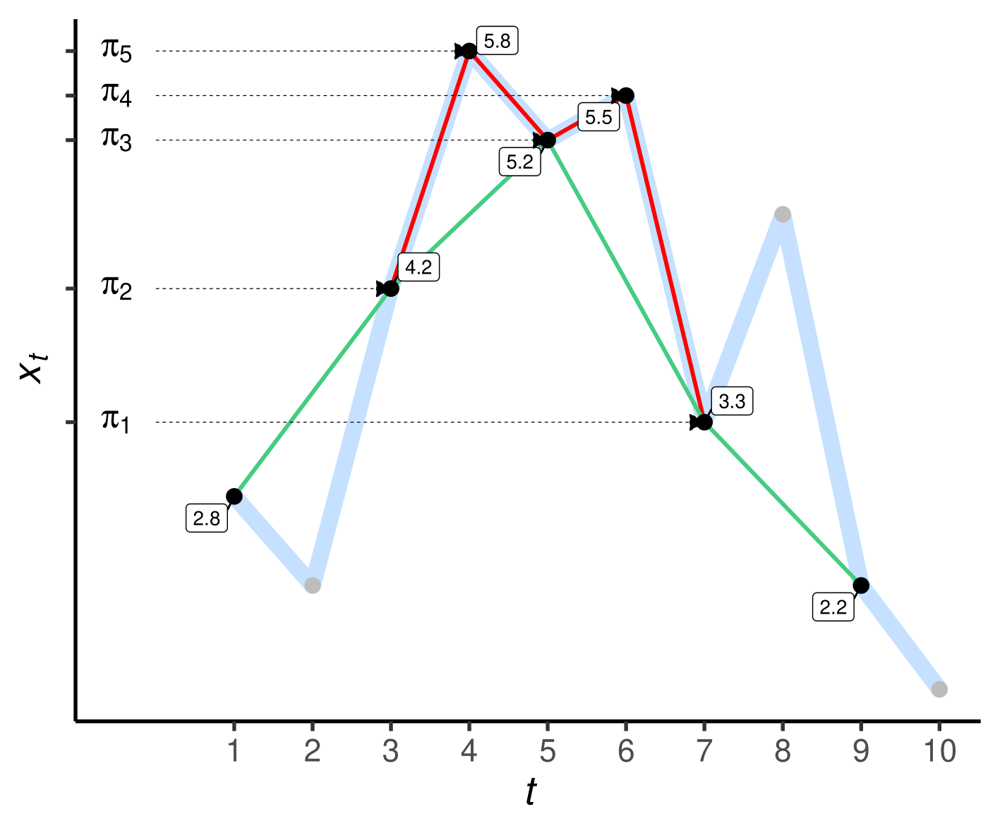
Ao usar \(D=5\) e \(\tau=1\):
\(\mathbf X_{3}^{(5,1)}=(4.2, 5.8, 5.2, 5.5, 3.3)\)
\(\mathbf X_{3}^{(5,1)} \to 51342\)
Ao usar \(D=5\) e \(\tau=2\):
\(\mathbf X_{1}^{(5,2)}=(2.8, 4.2, 5.2, 3.3, 2.2)\)
\(\mathbf X_{1}^{(5,2)} \to 51423\)
A partir do conjunto de padrões ordinais podemos seguir com três tipos de análise:
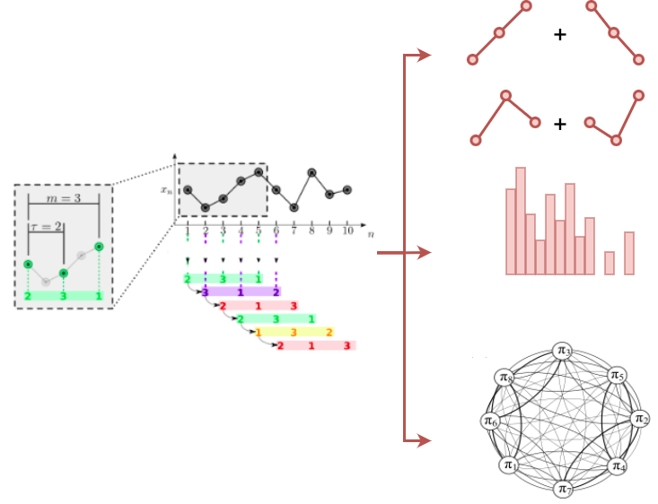
Principais características:
O NATS surgiu com a necessidade de construir uma ferramenta gráfica/pacote de simples utilização mais completo da literatura.
Abaixo vemos uma tabela resumo com as principais features e funcionalidades utilizados na literatura e presentes em cada pacote R:
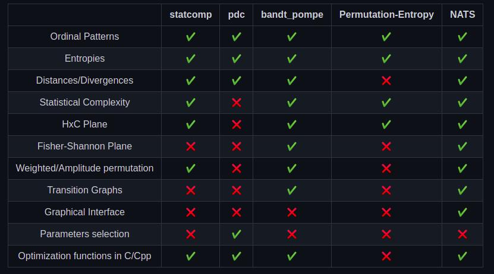Sistema web desenvolvido em R usando o framework Shinny
Ferramenta gráfica amigável
Recursos rápidos, eficientes e numericamente confiáveis
Apresenta portabilidade para vários sistemas operacionais e arquiteturas de hardware
Use apenas ferramentas FLOSS (Free/Libre Open Source Software)
Além da versão web, também construímos um pacote R com algumas rotinas de:
Geração de plots
Cálculo da distribuição de Bandt-Pompe e suas principais variantes
Cálculo de medidas de entropia, divergências e complexidade estatística
Funções de plot dos planos Fisher-Shannon e Entropia-Complexidade
A frequência dos padrões não são fáceis de interpretar e certas combinações de frequências podem ser mais significativas.
“\(\mathbb P({\pi_i})\) para um dado \(D\) pode ser interpretada como a função de autocorrelação. Ambos são obtidos por uma espécie de média ao longo de um determinado período de tempo.”
Suposição de estacionariedade para o processo: a probabilidade de um padrão não muda durante o tempo.
Up-down balance (\(\beta\)) - mede a assimetria, não-Gaussianidade ou irreversibilidade do processo:
Turning rate (\(\alpha\)) - mede a quantidade relativa de máximos e mínimos locais presentes na série.
Podemos calcular uma distribuição de probabilidade a partir da frequência relativa dos símbolos contra os \(D!\) possíveis padrões:
\[p(\widetilde\pi_t^D) = \frac{ \# \left \{\mathbf X_t^{(D,\tau)} \text{ é do tipo } \widetilde\pi_t^D \right\}}{T- (D-1)\tau}\]
onde \(t \in \{1, \dots, T-(D-1)\tau\}\).
O grafo de transição de padrões ordinais \({G} = ({V}, {E})\) representa como se comportam as transições entre dois padrões ordinais consecutivos ao longo de uma sequência.
Nesta nova representação, cada vértice corresponderá a um símbolo e as arestas às transições entre estes: \(V = \{v_{\widetilde\pi_t^D}\}\), e \(E = \{(v_{\widetilde\pi_t^D}, v_{\widetilde\pi_{t+1}^D}): v_{\widetilde\pi_t^D}, v_{\widetilde\pi_{t +1}^D} \in V \}\)
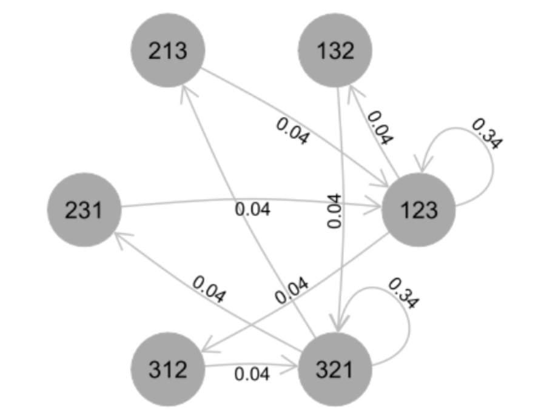
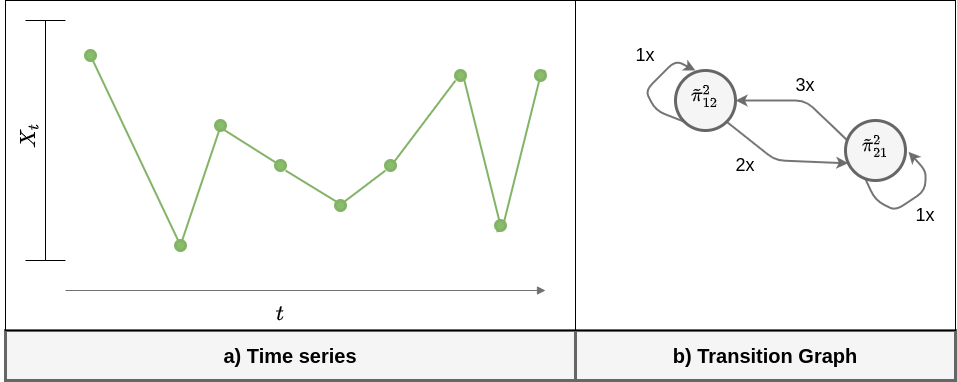
Os pesos \(\mathbb W = \{w_{v_{\widetilde{\pi}^D_i}, v_{\widetilde\pi^D_j}}: v_{\widetilde\pi^D_i}, v_{\widetilde \pi^D_j} \in V \}\) atribuídos a cada aresta descreve a probabilidade de existência de transições entre os padrões \((v_{\widetilde\pi^D_i}, v_{\widetilde\pi^D_j})\) ao longo da sequência, ou seja, os pesos são calculados como a frequência relativa de cada transição: \[\begin{equation} w_{v_{\widetilde\pi^D_i}, v_{\widetilde\pi^D_j}} = \frac{|\Pi_{\widetilde\pi^D_i,\widetilde\pi^D_j}|}{T-( D-1)\tau-1}, \end{equation}\] onde \(|\Pi_{\widetilde\pi^D_i,\widetilde\pi^D_j}|\) é o número de transições do padrão \(\widetilde\pi^D_i\) para o padrão \(\widetilde\pi^D_j\).
Probabilidade de auto-transição: mensura a probabilidade de ocorrer um loop no grafo, ou seja, dois padrões iguais ocorrerem sequencialmente. Foi mostrado na literatura que esta medida está diretamente relacionada com a correlação temporal das séries temporais.
\[p_{st} = \sum_{i = 1}^{D!} p(\pi_i, \pi_i)\]
A entropia mede a desordem ou imprevisibilidade de um sistema caracterizado por uma distribuição de probabilidade.
\[ H_S(p) = -\frac1{\log D!}\sum_{\ell=1}^{D!} p_{\ell} \log p_{\ell}. \]
Notem que \(H_S(p) \in [0,1]\) para todo \(p\).
$benign_traffic
[1] 0.9604932
$gafgyt_combo_attack
[1] 0.698885
$gafgyt_junk_attack
[1] 0.7055017
$gafgyt_scan_attack
[1] 0.6139965
$mirai_ack_attack
[1] 0.8498878
$mirai_scan_attack
[1] 0.128789
$mirai_syn_attack
[1] 0.8491023
$mirai_udp_attack
[1] 0.8892733
$mirai_udpplain_attack
[1] 0.8632968
$index
[1] 0A complexidade estatística mensura o grau de dependência estrutural entre os elementos da série temporal.
\[ C_{JS} = H_S(p) Q_{JS}(p, U) \]
onde \(Q_{JS}\) será uma medida de desiquilíbrio, uma medida de quão distante \(p\) está de uma distribuição de equilíbrio, ou seja, de uma distribuição não informativa (usualmente, a distribuição uniforme).
$benign_traffic
[1] 0.03681875
$gafgyt_combo_attack
[1] 0.1859509
$gafgyt_junk_attack
[1] 0.1836721
$gafgyt_scan_attack
[1] 0.2120599
$mirai_ack_attack
[1] 0.1148104
$mirai_scan_attack
[1] 0.1070361
$mirai_syn_attack
[1] 0.1147133
$mirai_udp_attack
[1] 0.09169117
$mirai_udpplain_attack
[1] 0.1114706
$index
[1] 0A informação de Fisher é uma medida capaz de capturar a concentração de uma distribuição.
Entropia de Shannon: mede o espalhamento global da distribuição
Informação de Fisher: possui propriedade de localidade porque reflete as diferenças entre probabilidades consecutivas de uma distribuição.
A informação de Fisher para o caso discreto é dada por:
\[ F[p_{\pi}] = F_0 \sum^{D! - 1}_{t = 1} (\sqrt{p_{t+1}} - \sqrt{p_{t}})^2, \]
onde \(F_0\) é uma constante de normalização.
$benign_traffic
[1] 0.0316788
$gafgyt_combo_attack
[1] 0.163575
$gafgyt_junk_attack
[1] 0.1640349
$gafgyt_scan_attack
[1] 0.210492
$mirai_ack_attack
[1] 0.09123266
$mirai_scan_attack
[1] 0.4011461
$mirai_syn_attack
[1] 0.08962866
$mirai_udp_attack
[1] 0.07229066
$mirai_udpplain_attack
[1] 0.08798135
$index
[1] 0.5Como as arestas representam a ocorrência de transições entre padrões consecutivos, seu número é um indicador da dinâmica das séries temporais.
Por exemplo, à medida que a aleatoriedade de um processo aumenta, também aumentam as chances de que todas as transições possíveis no gráfico ocorram.
O número de arestas pode ser computado pela seguinte equação:
\[ N_E = |E[G_{\pi}]| \]
Entropia aplicada em relação aos pesos das arestas.
$benign_traffic
[1] 0.7559593
$gafgyt_combo_attack
[1] 0.5407685
$gafgyt_junk_attack
[1] 0.5448946
$gafgyt_scan_attack
[1] 0.4727892
$mirai_ack_attack
[1] 0.662169
$mirai_scan_attack
[1] 0.09684623
$mirai_syn_attack
[1] 0.661374
$mirai_udp_attack
[1] 0.6920004
$mirai_udpplain_attack
[1] 0.6578919
$index
[1] 0Complexidade estatística aplicada em relação aos pesos das arestas.
$benign_traffic
[1] 0.2946553
$gafgyt_combo_attack
[1] 0.3004417
$gafgyt_junk_attack
[1] 0.3016053
$gafgyt_scan_attack
[1] 0.286723
$mirai_ack_attack
[1] 0.3040896
$mirai_scan_attack
[1] 0.08597036
$mirai_syn_attack
[1] 0.3041075
$mirai_udp_attack
[1] 0.3030129
$mirai_udpplain_attack
[1] 0.3057768
$index
[1] 0Medida de informação de Fisher aplicada em relação aos pesos das arestas.
$benign_traffic
[1] 0.5971372
$gafgyt_combo_attack
[1] 0.547542
$gafgyt_junk_attack
[1] 0.5392689
$gafgyt_scan_attack
[1] 0.5540891
$mirai_ack_attack
[1] 0.5303893
$mirai_scan_attack
[1] 0.5131325
$mirai_syn_attack
[1] 0.5379916
$mirai_udp_attack
[1] 0.5041799
$mirai_udpplain_attack
[1] 0.4791961
$index
[1] 0.5\(p_{st}\) :
$benign_traffic
[1] 0.1574589
$gafgyt_combo_attack
[1] 0.4974997
$gafgyt_junk_attack
[1] 0.4958595
$gafgyt_scan_attack
[1] 0.5711885
$mirai_ack_attack
[1] 0.3838861
$mirai_scan_attack
[1] 0.9401928
$mirai_syn_attack
[1] 0.3775253
$mirai_udp_attack
[1] 0.3842061
$mirai_udpplain_attack
[1] 0.4765372
$index
[1] 1Para cada série temporal \(X\) e para cada par \((D, \tau_i)\) teremos um conjunto de features:
\[ f_{\tau_i} = \{f_{\tau_i, 1}, f_{\tau_i, 2}, \dots, f_{\tau_i, j}\}, \]
onde \(j\) é o número total de features extraídas na análise.
Em nossa análise teremos:
\[ f_{\tau_i} = \{N^{\tau_i}_E, H_{S}[E_w]^{\tau_i}, C_{JS}[E_w]^{\tau_i}, F[E_w]^{\tau_i}, p_{s_t}^{\tau_i}, H_{S}[p_{\pi}]^{\tau_i}, C_{JS}[p_{\pi}]^{\tau_i}, F[p_{\pi}]^{\tau_i}\} \]
\(H_{S}[p_{\pi}]^{\tau_i}\): Entropia Normalizada de Shannon em relação ao histograma de frequência
\(C_{JS}[p_{\pi}]^{\tau_i}\): Complexidade Estatística em relação ao histograma de frequência
\(F[p_{\pi}]^{\tau_i}\): Medida de Informação de Fisher em relação ao histograma de frequência
\(N^{\tau_i}_E\): Número de arestas
\(H_{S}[E_w]^{\tau_i}\): Entropia Normalizada de Shannon em relação aos pesos das arestas
\(C_{JS}[E_w]^{\tau_i}\): Complexidade Estatística em relação aos pesos das arestas
\(F[E_w]^{\tau_i}\): Medida de Informação de Fisher em relação aos pesos das arestas
\(p_{s_t}^{\tau_i}\): Probabilidade de auto-transição
Processo de transformação de séries temporais para descritores obtidos a partir da transformação multiescala:
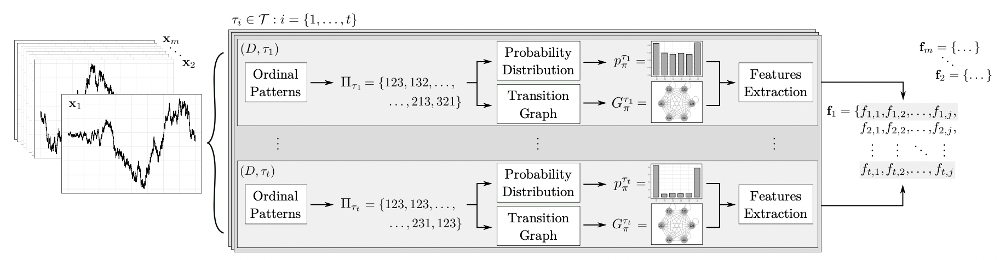Transformando em código:
extract_features <- function(){
for(class_series in 1:n_classes){
for(i in 1:length(Taus)){
probs_hist = BandtPompe(df_series[, class_series], dimension=3, Taus[i])
series_features[class_series, i, 1] = ShannonEntropyNormalized(probs_hist)
series_features[class_series, i, 2] = StatisticalComplexity(probs_hist)
series_features[class_series, i, 3] = FisherEntropy(probs_hist)
probs_graph = TransitionGraphs(df_series[, class_series], dimension=3, Taus[i])
series_features[class_series, i, 4] = number_edges(probs_graph)
series_features[class_series, i, 5] = ShannonEntropyNormalized(probs_graph)
series_features[class_series, i, 6] = StatisticalComplexity(probs_graph)
series_features[class_series, i, 7] = FisherEntropy(probs_graph)
series_features[class_series, i, 8] = self_transition_prob(probs_graph)
}
}
}Quando pensamos em classificação de dados temporais podemos ter dois diferentes cenários de análise:
1) N:1
Para cada sequência de comprimento \(N\) teremos uma label associada.
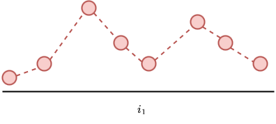
2) 1:1
Para cada elemento da série teremos um rótulo associado. 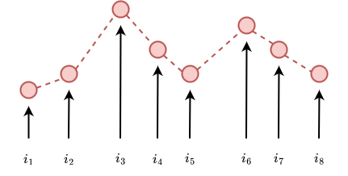
Para utilizarmos padrões ordinais na tarefa de classificação de padrões anômalos produzidos por botnets, seguiremos os seguintes passos:
Capturaremos informações de número de pacotes enviados do dispositivo suspeito diretamento do seu tráfego de rede.
Transformaremos as séries temporais, por meio da transformação de padrões ordinais, em um conjunto de features que podem capturar o comportamento dinâmico dos dispositivos.
Classificaremos as features de cada série temporal como anômala ou regular.
Para treinarmos o modelo precisaremos:
\[ \mathbb X^k_{n \times m} = [\mathbb x^k_1, \mathbb x^k_2, \dots, \mathbb x^k_n]^T \]
Embora a técnica não exija que as séries temporais possuam o mesmo comprimento, por simplicidade adotaremos aqui que cada série temporal possuirá \(m\) elementos:
\[ \mathbb x^k_{i} = \mathbb x^k_{i_1}, \mathbb x^k_{i_2}, \dots, \mathbb x^k_{i_m} \]
\[ \mathbb F^k_{n \times t_j} \gets [f^k_1, f^k_2, \dots, f^k_n]^T \]
Isolation Forest é um algoritmo não supervisionado baseado em árvores de decisão e originalmente desenvolvido para detecção de anomalias em dados tabulares.
Consiste em particionar aleatoriamente sub-amostras de dados de acordo com algum atributo
Quanto mais anômala a observação menos divisões aleatórias serão necessárias para isolá-la (profundidade de isolamento)
O processo de divisão aleatória é realizado de forma recursiva até que não seja mais possível realizar particionamentos ou até um critério de parada ser atingido.
Com isso o isolation forest analisa as relações entre variáveis e suas possíveis combinações
A profundidade de isolamento é utilizada como métrica de outlinerss de uma amostra
Geralmente são utilizadas várias árvores e o resultado final será a média dos resultados individuais
Implementação rápida e multi-thread do algoritmo Isolation Forest (a.k.a. iForest) e algumas variações como:
Extended Isolation Forest (EIF),
Split-Criterion iForest (SCiForest),
Fair-Cut Forest (FCF),
Robust Random-Cut Forest (RRCF).
Pacote escrito em C++ com interfaces em Python, R e C.
series_len = 1000
ben_df <- df_series[,1]
x_ben_df = featureAsDataset(ben_df, series_len)
x_ben_df = x_ben_df[,-ncol(x_ben_df)]
model <- isolation.forest(
as.data.frame(x_ben_df),
ndim=n_features,
ntrees=40
)
summary(model)Extended Isolation Forest model
Splitting by 8 variables at a time
Consisting of 40 trees
Numeric columns: 1000
Size: 178.33 KiBA metodologia Bandt-Pompe e suas variantes têm sido utilizadas com sucesso na análise de diversos tipos de dinâmicas, recebendo até agora mais de \(2160\) citações advindas de \(684\) periódicos distintos.
Encontramos trabalhos utilizando essa abordagem em diversas áreas do conhecimento científico, dentre elas, análise de dados sob o contexto de IoT, como por exemplo:
FREITAS, Cristopher GS; ROSSO, Osvaldo A.; AQUINO, Andre LL. Mapping Network Traffic Dynamics in the Complexity-Entropy Plane. In: 2020 IEEE Symposium on Computers and Communications (ISCC). IEEE, 2020. p. 1-6.
NASCIMENTO, Givanildo L. et al. Data Sampling Algorithm Based on Complexity-Entropy Plane for Smart Sensing Applications. IEEE Sensors Journal, v. 21, n. 22, p. 25831-25842, 2021.
CARDOSO-PEREIRA, Isadora et al. Leveraging the self-transition probability of ordinal patterns transition network for transportation mode identification based on GPS data. Nonlinear Dynamics, v. 107, n. 1, p. 889-908, 2022.
A heurística (2015) visa escolher os hiperparâmetros cuja entropia seja a mais diferente possível de uma distribuição uniforme.
Para encontrar os hiperparâmetros apropriados para agrupar um conjunto de séries temporais, calculamos a entropia normalizada média de um conjunto de distribuições.
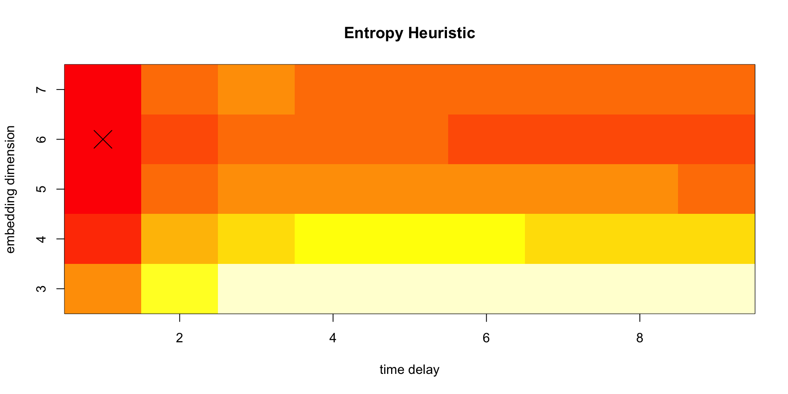Embora os limites de \(H \times C\) estejam bem definidos, uma caracterização completa de sua topologia intrínseca é um problema em aberto, devido às restrições impostas pelo seu espaço curvilíneo.
O desconhecimento da distribuição conjunta dos pontos obtidos por este plano, devido à correlação existente entre suas variáveis, inviabiliza os estudos de estatísticas de teste para séries temporais típicas neste espaço de caracterização.
Resultados nessa direção podem ser encontrados na literatura:
CHAGAS, Eduarda TC et al. White Noise Test from Ordinal Patterns in the Entropy–Complexity Plane. International Statistical Review, 2022.
CHAGAS, Eduarda TC et al. Statistical properties of the entropy from ordinal patterns. Chaos 32, 113118 (2022) https://doi.org/10.1063/5.0118706
O uso de inteligência artificial com padrões ordinais e descritores de Teoria da Informação ainda é incipiente, destacando-se no uso de algoritmos de aprendizado de máquina em atividades de caracterização/classificação de dados.
PESSA, Arthur AB et al. Determining liquid crystal properties with ordinal networks and machine learning. Chaos, Solitons & Fractals, v. 154, p. 111607, 2022.
NEUMAN, Yair; COHEN, Yochai; TAMIR, Boaz. Short-term prediction through ordinal patterns. Royal Society open science, v. 8, n. 1, p. 201011, 2021.
CHAGAS, Eduarda TC et al. Analysis and classification of SAR textures using information theory. IEEE Journal of Selected Topics in Applied Earth Observations and Remote Sensing, v. 14, p. 663-675, 2020.
Sob esse contexto, a seguir discutiremos alguns problemas de pesquisa que são de grande interesse da comunidade de análise de padrões ordinais utilizando a simbolização de Bandt-Pompe. Não temos como objetivo exaurir todos os problemas de pesquisa em aberto na área, desse modo, para uma discussão mais completa, recomendamos o seguinte artigo:
LEYVA, Inmaculada et al. 20 years of ordinal patterns: Perspectives and challenges. Europhysics Letters, v. 138, n. 3, p. 31001, 2022.
eduarda.chagas@dcc.ufmg.br